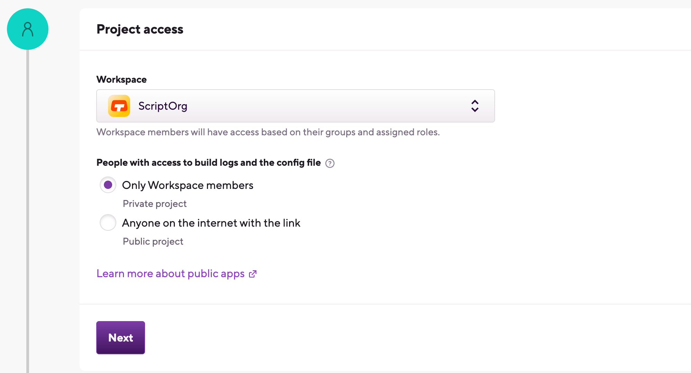
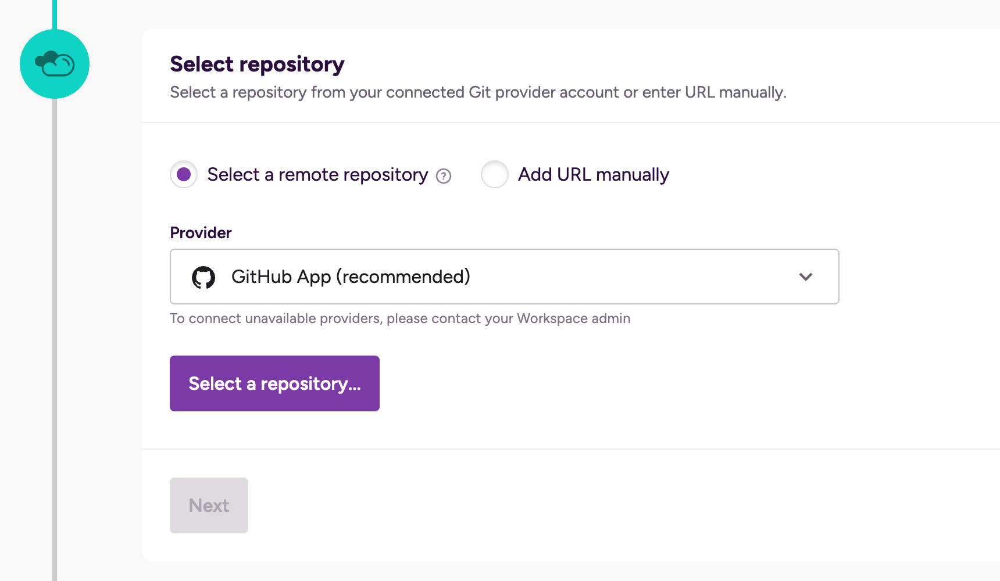
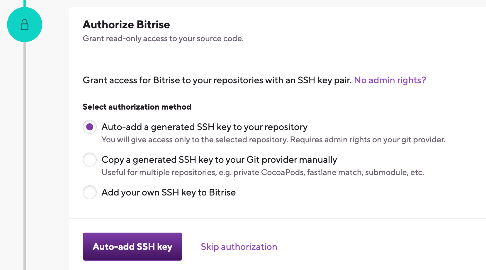
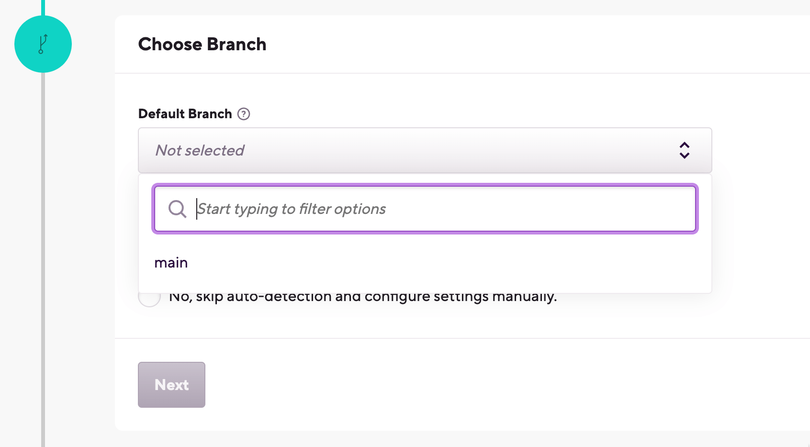
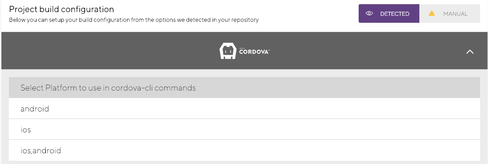
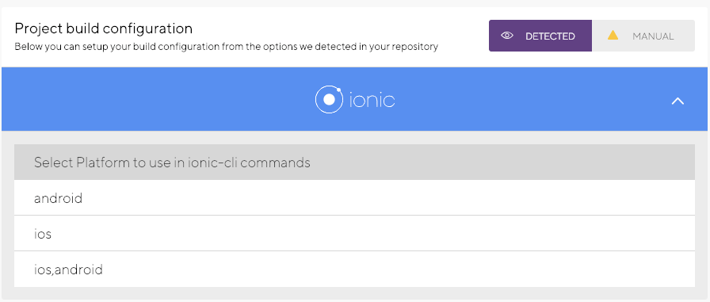
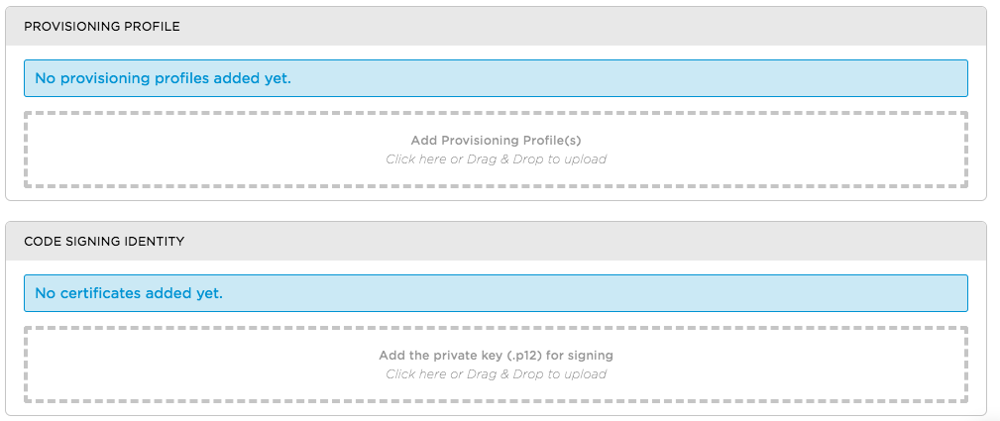
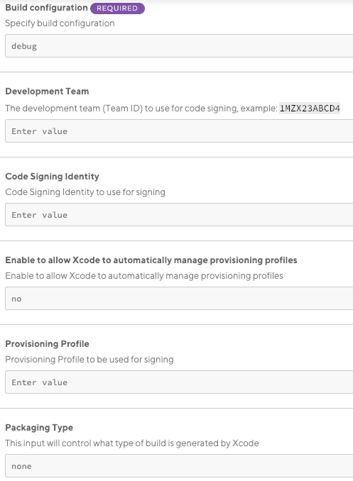
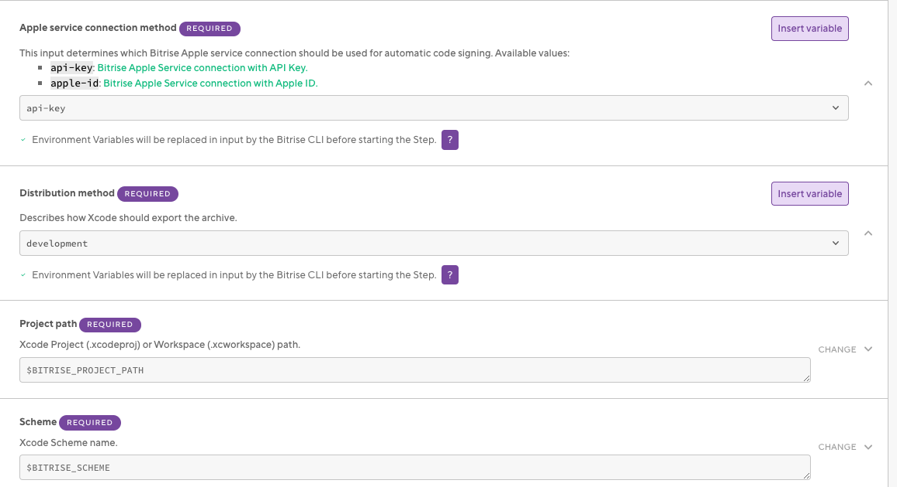
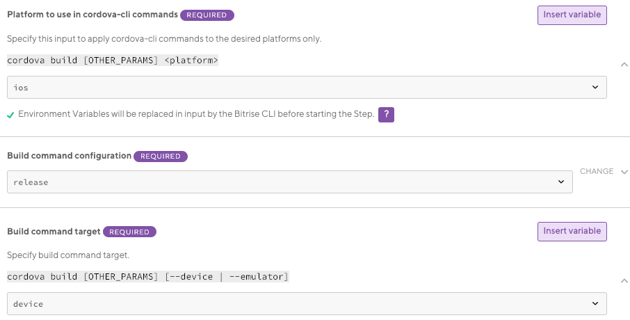

- Welcome to Bitrise documentation!
- Getting started
- Signing up for Bitrise
- Creating your first Workspace
- Adding a new app
- Webhooks and triggers
- Builds and Workflows
- Testing and deploying
- Migrating to Bitrise
- Signing up for Bitrise
- Creating your first Workspace
- Adding a new app
- Getting started with iOS apps
- Getting started with Android apps
- Getting started with React Native apps
- Getting started with Flutter apps
- Getting started with Ionic/Cordova apps
- Getting started with Expo apps
- Infrastructure
- Accounts
- Workspaces
- Apps
- Workflows and Pipelines
- Builds
- Code signing
- Testing
- iOS testing
- Android testing
- Flutter testing
- React Native testing
- Device testing with Firebase
- Test Reports
- Test Reports
- Exporting to Test Reports from any Step
- Running unit and UI tests for iOS apps
- Installing an .ipa file
- Registering test devices for iOS apps
- Device testing for iOS
- Running Android unit tests
- Device testing for Android
- Running tests in the Visual Studio App Center
- Running Detox tests on Bitrise
- Measuring your code coverage with Codecov
- Deploying
- Insights
- Bitrise CLI
- API
- References
- Getting started
- Bitrise Docs
Getting started with Ionic/Cordova apps
Get started on Bitrise by signing up via email or a Git provider, connecting a repository, and running the first build for your Ionic/Cordova app.
You can use Cordova and Ionic frameworks to develop cross-platform apps. Bitrise can help you with its automated testing, code signing and deployment procedures so that you can ship your iOS and/or Android app/s to the respective marketplace in no time! If your Workspace has more than one concurrency, you can have Android and iOS builds run simultaneously. Now let us guide you through the process!
Do you have a Bitrise account?
Make sure you have signed up to bitrise.io and can access your Bitrise account. There are multiple ways of registering an account:
Adding an Ionic/Cordova app to Bitrise
Wait while Bitrise is validating your project. We look for your configuration files and set up your app based on them.
Log in to Bitrise and go to the Dashboard.
Click the button.
Under Project access, select the Workspace that will own the app.
Set the privacy of the app.
Caution
You cannot change this setting later! If you realize you've accidentally added your app as a public app even though you need it to be private, you'll have to delete the app and add it again.
Private apps are only accessible to you, your Workspace members and those who are invited to work on an app. They require authentication to access the repository of the app.
Public apps expose their
bitrise.ymland their build logs to everyone. If you have a public app’s build URL, you can view its build log, to help with troubleshooting, for example. Public apps do not require authentication and they cannot have SSH keys.
Select one of two options to set your repository URL:
With the Select remote repository option, you can select a repository from a list of repos from a connected Git provider account. Choose the Git provider from the dropdown menu, then click Select a repository... and select the repository from the list.
The Enter URL manually option does not require a connected Git provider account: you can simply enter the URL and proceed to the authentication phase. We strongly recommend using an SSH URL, unless you are setting up a public app.
Repository URL
You will be able to change your project's repository URL later. You can also connect or disconnect your account to Git provider services at any time.
If you signed up for Bitrise using a Git provider account, that one is already connected and you can select any of your repositories from it.
Add an SSH key in the Authorize Bitrise section. This is only relevant for private apps: public apps can't have SSH keys and they don't require authentication. Choose from one of three options:
Auto-add a generated SSH key to your repository: We recommend using this option. We automatically generate an SSH key pair and register the public key to your repository. Requires your connected Git provider account to have admin rights to the repository.
Copy a generated SSH key to your Git provider manually: We generate an SSH key pair for you and you can copy the public key and register it manually to your Git provider. It is useful if, for example, you need to access multiple repositories with the same SSH key.
Add your own SSH key to Bitrise: You can generate your own SSH key and paste the private key here after choosing this option. You also need to add the public key to the repository manually. To generate your SSH key pair: Generating your own SSH keypair.
Configure SSH keys at any time
If you can't set up a valid, working SSH key connection at this time, don't worry: proceed with adding your app. You can set up the SSH connection afterwards: Configuring SSH keys.
Select the default branch of your repository. This branch should contain the configuration of your project.
If you successfully configured SSH access in the previous step or if you're adding a public app, Bitrise will parse your repository and allow you to select a branch from a dropdown menu.
If you didn't configure repository access, you need to type the branch name manually.
You can change the default branch of the app later.
In the next step, choose Yes, auto-detect configuration. Bitrise will scan your repository and attempt to set up a stack and default Workflows based on the results of the scan. In most cases, we recommend choosing this option.
Project type
Detecting a project type serves to assist in the initial configuration of your app. But don't worry, you can change every setting, including the project type, at any time after you added the app.
At Project Build configuration, you can select which platform to build your app for. You can select:
iOS.
Android.
iOS and Android (where the Android build gets built first).
Register a webhook when prompted so that Bitrise can start a build automatically when code is pushed to your repository, or a pull request is created.
Once you are done, click to go to the newly added app's home page. From there, you can start editing your Workflows and run builds.
Installing dependencies for ExpoIonic/CordovaReact Native apps
If the Bitrise project scanner has successfully scanned your React NativeIonic/Cordova project, Run npm command or Run yarn command Steps will be included in your default Workflows. These Steps can install the missing Javascript dependencies for your app.
For native Android dependencies, you can use the Install missing Android SDK components Step.
For native iOS dependencies, you can use, among others, the Brew install Step or the Run CocoaPods install Step.
To install Javascript dependencies with npm:
Using Yarn instead of npm
In this guide, we're using npm to install Javascript dependencies. However, you can use the Run yarn command Step: it can install missing JS dependencies without any additional configuration required.
Open your app on Bitrise.
Click the button on the main page.
On the Workflows & Pipelines page, find the Workflow you need and click into its row to open the Workflow Editor.

Make sure your Workflow includes the Run npm command Step.
In The 'npm' command with arguments to run input variable, type
install.
Using the
npm cicommand instead ofnpm installIf you already have an up to date
package-lock.jsonfile in your project, we recommend using thecicommand in The 'npm' command with arguments to run input. Usingnpm cican not only result in much faster build times compared tonpm installbut more reliable builds as well.
Testing Ionic/Cordova apps
You can run unit tests for Ionic/Cordova apps on Bitrise by using our Karma Jasmine Test Runner or Jasmine Test Runner Steps.
If your Cordova/Ionic project has a Karma Jasmine dependency in its package.json file, our scanner will detect it when you're adding your app and automatically insert the respective testing Step into your Workflow. If this dependency is missing from your project, you can manually insert one of our testing steps to your Workflow using our Workflow Editor.
Open your app on Bitrise.
Click the button on the main page.

On the Workflows & Pipelines pages, you can:
Click the button to get to the bitrise.yml tab of the Workflow Editor.
Select a Workflow from the list of the app's Workflows.
Make sure you have a testing Step in your Workflow.
Installing dependencies
You must install dependencies before you can run tests.
You can choose between the Karma Jasmine Test Runner and the Jasmine Test Runner Steps.
In this example, you can find a bitrise.yml configuration that includes a Workflow called primary. This Workflow includes the Karma Jasmine Test Runner Step.
primary:
steps:
- activate-ssh-key@4.0.3:
run_if: '{{getenv "SSH_RSA_PRIVATE_KEY" | ne ""}}'
- git-clone@4.0.11: {}
- script@1.1.5:
title: Do anything with Script step
- npm@0.9.1:
inputs:
- command: install
- karma-jasmine-runner@0.9.1: {}
- deploy-to-bitrise-io@1.3.15: {}Code signing Ionic/Cordova apps
If you want to build an app for iOS or Android, you need to upload the platform-specific files into the Code Signing tab of the Workflow Editor. You can also generate builds for both platforms which requires uploading all code signing files of the platforms.
iOS code signing for Ionic and Cordova projects
Bitrise supports both manual and automatic provisioning for the iOS code signing of Ionic and Cordova apps as well.
Naturally, Bitrise supports iOS applications built with either Ionic or Cordova. However, the code signing process is slightly different compared to a native Xcode project.
Bitrise supports both manual and automatic provisioning for Ionic and Cordova apps as well - and once again, the processes are somewhat different.
Ionic/Cordova code signing with manual code signing asset management
Generate the native Xcode project locally from your Ionic or Cordova project by calling
cordova platform add iosorionic cordova platform add ios.Upload the files to bitrise.io.
Make sure you have the Certificate and profile installer Step in your Workflow.
Add the Generate cordova build configuration Step to your Workflow. It must come after the Certificate and profile installer Step.
Fill in the required inputs for the Step. Please note that both the Code Signing Identity and the Provisioning Profile are required inputs for iOS apps even though they are not marked as such.
Build configuration: you can set it to either
debugorrelease.Code Sign Identity: enter a Developer or a Distribution identity.
Provisioning Profile: enter the appropriate provisioning profile.
Packaging Type: this controls what type of build is generated by Xcode. Set the type of code signing you need.

Add the
Cordova archiveor theIonic archivestep to your workflow.Fill in the required inputs.
The Platform input needs to be set to:
device.The Build command configuration input must match the Build configuration input of the Generate cordova build configuration Step.
This Step must come after the Generate cordova build configuration Step in the Workflow.
Run your build!
Ionic/Cordova code signing with automatic code signing asset management
Make sure your .p12 signing certificates are uploaded to bitrise.io.
Add the Cordova prepare or the Ionic prepare Step to your Workflow. These Steps call the
platform rmandplatform addcommands.Add the Manage iOS Code Signing Step to your Workflow. If you have both the Certificate and Profile Installer and the Manage iOS Code Signing Steps in your Workflow, your build might encounter unexpected issues.
The Step will export:
The project’s development team.
The installed codesign identity’s name.
The installed provisioning profile.
One code signing Step only
If you have both the Certificate and profile installer and the Manage iOS Code Signing Steps in your Workflow, your build might encounter unexpected issues.
Select the Apple service connection method (based on the Apple service you have set up in Bitrise) and the Distribution method.
Add the Generate cordova build configuration Step to your Workflow.
Configure the Step to use the code signing settings exported by the Manage iOS Code Signing Step:
Development distribution example:
- generate-cordova-build-configuration: inputs: - development_team: $BITRISE_DEVELOPER_TEAM - package_type: development - code_sign_identity: iPhone Developer - configuration: debugProduction distribution example:
- generate-cordova-build-configuration: inputs: - development_team: $BITRISE_DEVELOPER_TEAM - package_type: app-store - code_sign_identity: iPhone Developer - configuration: releaseAdd the Cordova Archive or the Ionic Archive Step to your Workflow.
Fill in the required inputs.
The Platform input needs to be set to:
device.The Build command configuration input must match the Build configuration input of the Generate cordova build configuration Step.

Set the Should remove platforms as prepare step? to
false. This is crucial: it ensures the Step will not remove and re-add the platform of the native projects generated in the Cordova prepare or the Ionic prepare Step.Run your build!
Android code signing using the Android Sign Step
You can create a signed APK using the Android Sign Step in your Bitrise Workflow. This Step is configured to run if you have already uploaded your keystore file on the Code signing tab of the Workflow Editor.
You can create a signed APK using the Android Sign Step in your Bitrise Workflow. This Step is configured to run if you have already uploaded your keystore file to Bitrise.
The Android Sign Step is not required if signing is configured in your project’s build.gradle file. If so, running the Android Build Step (or the Gradle Runner Step) signs the output (APK or AAB) automatically. Nevertheless, we recommend that you use the Android Sign Step to sign your project in an easy and secure way.
jarsign and apksigner
APKs can be signed with either jarsigner or apksigner. For APKs, if you wish to use apksigner to sign your project, then in the Android Sign Step you have to first set the Enables apksigner input to true and leave the APK Signature Scheme input on automatic. This way apksigner checks your APK’s minimum and target SDK versions and chooses the required schemes. It signs your project with V1 scheme if your minimum supported version is low and it also signs with other schemes for newer systems.
Please note that AAB files can only be signed with jarsigner. The Step uses jarsigner if it detects a file ending with .aab
Add the Android Sign Step to your Workflow after the Step that builds your APK or AAB file.
Bitrise uses the above Environment Variables and sets them as inputs into the respective fields of the Android Sign Step. Once the Step runs, it produces either a signed APK or an AAB. The signed APK or AAB is used in deploy Steps, for example, the Google Play Deploy Step or the Deploy to Bitrise.io Step. The latter deploys the APK/AAB on the Artifacts tab. You can also use Ship to deploy your app once you built an APK/AAB file.
Downloading your keystore file
You can download your keystore file to the project directory using the File Downloader Step:
- file-downloader: inputs: - source: $BITRISEIO_ANDROID_KEYSTORE_URL - destination: "$HOME/keystores/my_keystore.jks" #native android#
If a Step requires the keystore file, make sure to include that Step AFTER the File Downloader Step.
After this Step, my_keystore.jks will be available at $HOME/keystores/my_keystore.jks.
Deploying Ionic/Cordova apps
To build and deploy an Ionic or Cordova app on Bitrise, you need to digitally sign both the Android and iOS project (if you're building both) and then use the Cordova Archive or the Ionic Archive Step to build the app before deploying it.
You can deploy the successfully built app to:
Online stores, such as the Google Play Store or Apple's App Store.
Bitrise.io: the generated binaries will be available on the Artifacts tab of the build's page. You can download them from there or share them with others via the public install page.
Deploying a cross-platform app to bitrise.io
The Deploy to bitrise.io Step uploads all the artifacts related to your build into the Artifacts tab on your Build’s page.
You can share the generated app file (APK for Android or an IPA file for iOS) with your team members using the public install page. The public install page is a URL you can share with others who can install the generated app binary on their device. You can also notify user groups or individual users that your APK or IPA file has been built.
Publishing to expo.io
The Deploy to Bitrise.io Step does not use Expo commands and doesn’t publish to expo.io. This Step publishes artifacts to Bitrise and is not specific to a particular platform.
If you need to publish to expo.io, set the Run expo publish after eject? input of the Eject Expo Step to yes. Be aware that in that case you have to provide your username and password for your Expo account to publish to expo.io.
Open your app on Bitrise.
Click the button on the main page.
On the Workflows & Pipelines page, find the Workflow you need and click into its row to open the Workflow Editor.
Make sure you have the Deploy to bitrise.io Step in your Workflow.
In the Notify: User Roles, add the role so that only those get notified who have been granted with this role. Or fill out the Notify: Emails field with email addresses of the users you want to notify.
Make sure you set those email addresses as Secrets! These details can be also modified under Notifications if you click the eye icon next to your generated binary in the Artifacts tab.
If you want the Step to generate a public install page for you, set the Enable public page for the App? input to
true.
Deploying your Android project to Google Play
You can use the Deploy to Google Play Step in your Workflow to upload your digitally signed AAB/APK to the Google Play Store.
Add the Cordova archive or the Ionic archive Step to your Workflow.
Note that if you’re building for both iOS and Android in one project, and either of your apps fails, the whole Cordova archive/Ionic archive Step will fail.
Fill in the required inputs.
The Platform input needs to be set to device.
The Build command configuration input must match the Build configuration input of the Generate cordova build configuration Step.
The archive Step must come after the Generate cordova build configuration Step in the Workflow.
Configure code signing for your app.
You only need to do this for your very first Google Play deployment of the app.
In the Flutter Build Step, find the Android Platform Configs input group and make sure the Additional parameters input has the value
--release.In the Android output artifact type input field, select either APK or appbundle depending on your deployment requirements.
In the Output (.apk, .aab) pattern input, set the path where the Deploy to Google Play Step will be able to access the generated binary.
The path should be relative to the project source directory, stored in the
BITRISE_SOURCE_DIREnvironment Variable.Make sure you have the Deploy to Google Play Step after the Android SignCordova Archive or Ionic Archive Step in your Workflow.
Fill out the required input fields as follows:
Service Account JSON key file path: This field can accept a remote URL so you have to provide the Env Var which contains your uploaded service account JSON key. For example:
$BITRISEIO_SERVICE_ACCOUNT_JSON_KEY_URL.Package name: The package name of your Android app.
Track: The track where you want to deploy your APK (for example, alpha/beta/rollout/production or any custom track you set).
Deploying your iOS project to the App Store
Add the Cordova archive or the Ionic archive Step to your Workflow.
Note that if you’re building for both iOS and Android in one project, and either of your apps fails, the whole Cordova archive/Ionic archive Step will fail.
Fill in the required inputs.
The Platform input needs to be set to device.
The Build command configuration input must match the Build configuration input of the Generate cordova build configuration Step.
The archive Step must come after the Generate cordova build configuration Step in the Workflow.
Configure iOS code signing for your iOS project.
Add the Deploy to App Store Connect - Application Loader (formerly iTunes Connect) Step to your Workflow, after the Xcode Archive & Export for iOS Step but preferably before the Deploy to Bitrise.io Step.
Provide your Apple credentials in the Deploy to App Store Connect - Application Loader (formerly iTunes Connect) Step.
The Step will need your:
Apple ID.
Password or, if you use two-factor authentication on App Store Connect, your application password.
Don’t worry, the password will not be visible in the logs or exposed.